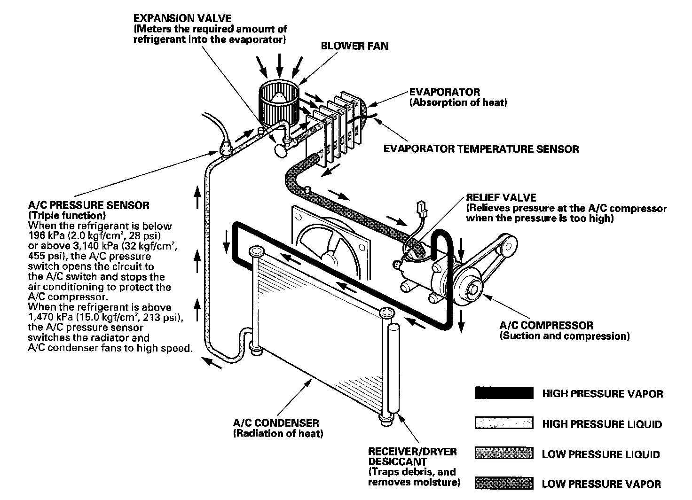
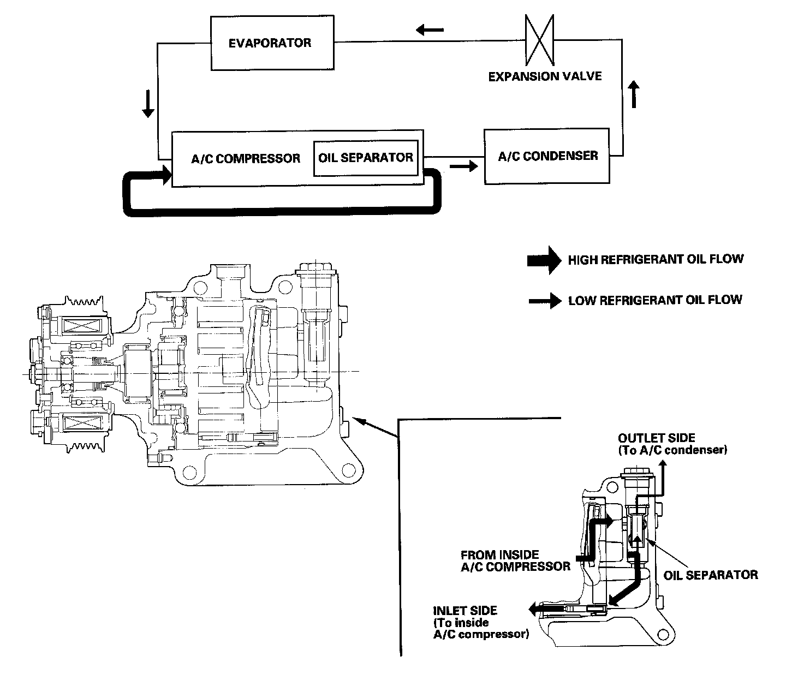
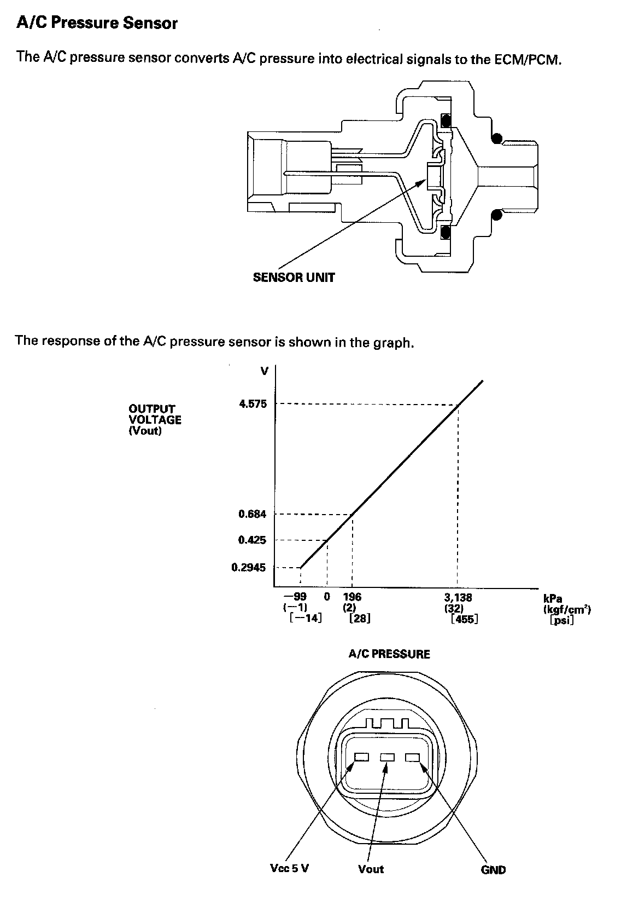
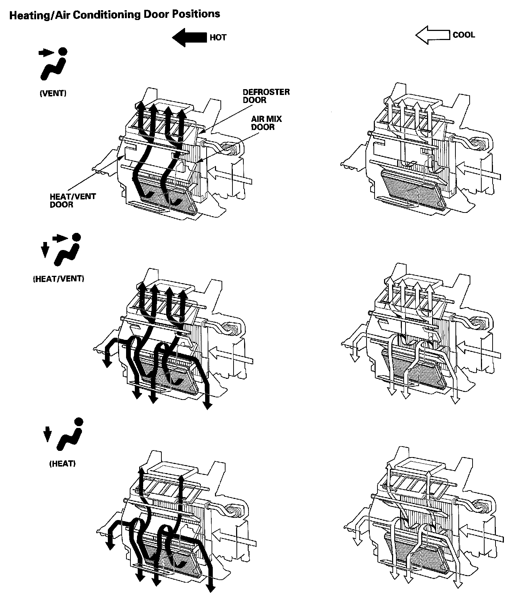
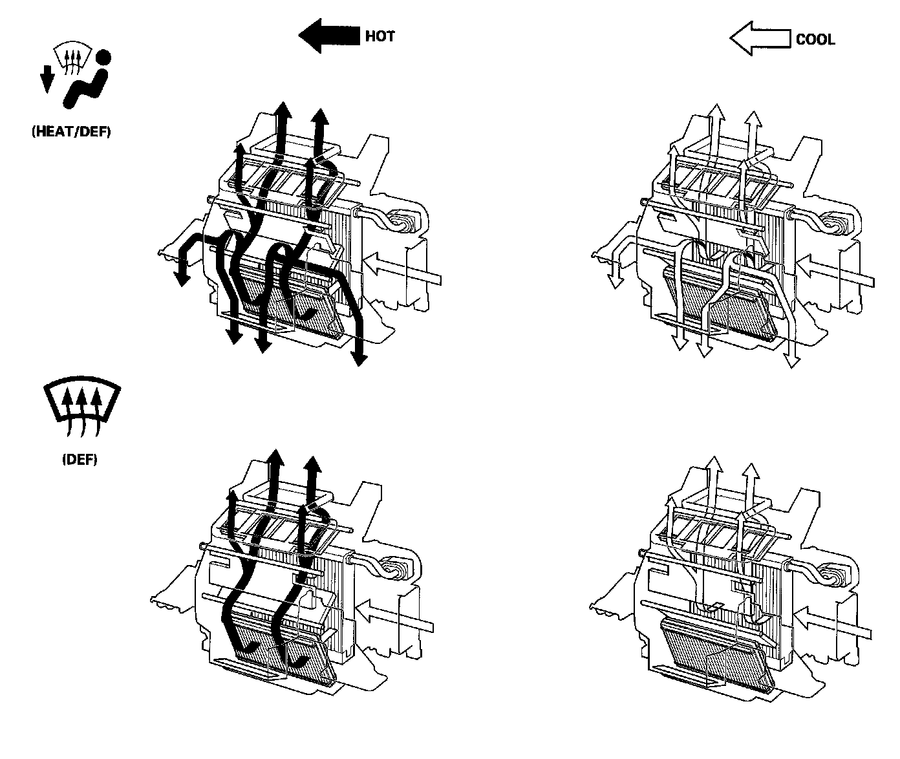
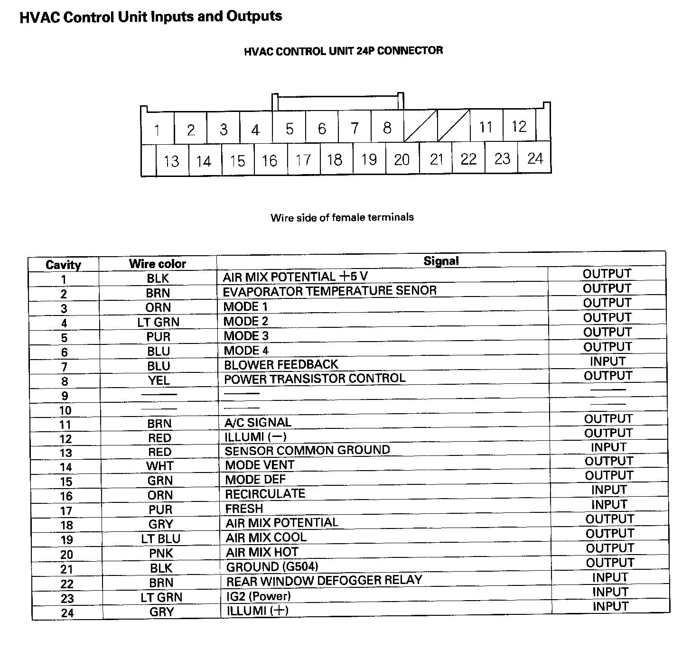

Heating/Air Conditioning
Heating/Air Conditioning
System Description
The air conditioning system removes heat from the passenger compartment by circulating refrigerant through the system.
This vehicle uses HFC-134a (R-134a) refrigerant, which does not contain chlorofluorocarbons. Pay attention to the following service items:
- Do not mix refrigerants CFC-12 (R-12) and HFC-134a (R-134a). They are not compatible.
- Use only the recommended polyalkyleneglycol (PAG) refrigerant oil (SP-10) designed for the R-134a A/C compressor. Intermixing the recommended (PAG) refrigerant oil with any other refrigerant oil will result in A/C compressor failure.
- All A/C system parts (A/C compressor, discharge line, suction line, evaporator, A/C condenser, receiver/dryer, expansion valve, O-rings for joints) are designed for refrigerant R-134a. Do not exchange with R-12 parts.
- Use a halogen gas leak detector designed for refrigerant R-134a.
- R-12 and R-134a refrigerant servicing equipment are not interchangeable. Use only a recovery/recycling/charging station that is U.L.-listed and is certified to meet the requirements of SAE J2210 to service the R-134a air conditioning systems.
- Always recover refrigerant R-134a with an approved recovery/recycling/charging station before disconnecting any A/C fitting.

Oil Separator
Oil emission from the A/C compressor to the A/C line is reduced by placing the oil separator in the A/C compressor. This results in a thinner oil film inside of the heat exchanger (A/C condenser and evaporator). Air conditioning efficiency is increased without sacrificing engine performance.

A/C Pressure Sensor


Heating/Air Conditioning Door Positions
HVAC Control Unit Inputs And Outputs:

HVAC Control Unit Inputs and Outputs